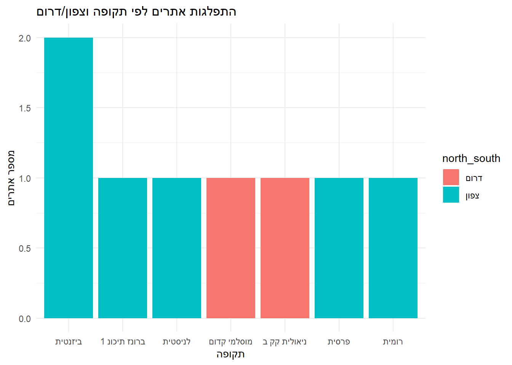
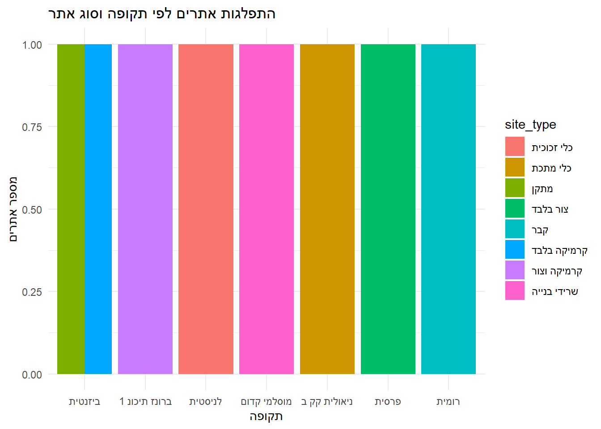

מטרת מחקר זה היא לבחון את השוני בדפוסי ההתיישבות בין אזור ההר לבין המישור לאורך תקופות היסטוריות שונות, תוך דגש על רציפות והתמדה יישובית. הניתוח מתבסס על מסד נתונים של חפירות הצלה (hazala.xlsx), ומבוצע באמצעות כלים סטטיסטיים ותצוגות גרפיות בשפת התכנות R. התוצאות מוצגות בגרפים השוואתיים המדגישים את מספר האתרים הפעילים בכל תקופה, במטרה לזהות מגמות ארוכות טווח והשוואות בין-אזוריות.
רקע
המחקר הארכיאולוגי בארץ ישראל עוסק לא אחת בשאלת הרציפות היישובית לאורך התקופות, ובמיוחד בהשוואה בין אזורי ההר והמישור. ישנה טענה רווחת במחקר כי אזור ההר נהנה מיציבות יישובית גבוהה יותר, בעיקר בתקופות של תהפוכות פוליטיות, חברתיות או כלכליות. באזורים אלה זוהתה לעיתים תכופות מגמה של המשכיות יישובית, אשר מיוחסת למבנה הטופוגרפי המגן, לתנאים החקלאיים, או לאופי החברתי של הקהילות. לעומת זאת, המישורים – למרות נגישותם ועושר משאביהם – נתפסים כרגישים יותר לשינויים חיצוניים ולתנודות יישוביות. שאלת השונות וההמשכיות בין שני האזורים ממשיכה להעסיק את עולם המחקר ומהווה נקודת מוצא למחקר הנוכחי.
מקורות ושיטות
library(readxl)library(dplyr)
Attaching package: 'dplyr'
The following objects are masked from 'package:stats':
filter, lag
The following objects are masked from 'package:base':
intersect, setdiff, setequal, union
לצורך בחינת ההבדלים בדפוסי ההתיישבות בין אזור ההר לבין המישור, נותחו נתונים מתוך קובץ אקסל בשם hazala.xlsx, הכולל מידע מחפירות הצלה ארכאולוגיות בישראל. הנתונים יובאו לסביבת R ועברו תהליכי ניקוי שכללו סינון שדות חסרים, מיפוי שמות התקופות, סיווג אתרים לפי סוג (למשל “מערה”, “חירבה”, “תל”), שיוך כל אתר לאזור גאוגרפי (הר או מישור, צפון או דרום), והפיכת מונחים לאחידים.
לאחר הניקוי, הנתונים עובדו ליצירת טבלאות מסכמות לפי תקופה, אזור והתפלגות אתרים. הממצאים הוצגו באמצעות גרפים מסוג עמודות, שנבנו ב־ggplot2, והדגישו את ההבדלים במספר האתרים הפעילים בכל תקופה לפי משתנים שונים. כל גרף התמקד בצירוף אחר של פרמטרים, כגון אזור ההר מול המישור, צפון מול דרום, וסוג האתר.
clean_data %>%filter(!is.na(period), !is.na(north_south)) %>%group_by(north_south, period) %>%summarise(site_count =n(), .groups ="drop") %>%ggplot(aes(x = period, y = site_count, fill = north_south)) +geom_col(position ="dodge") +labs(title ="התפלגות אתרים לפי תקופה וצפון/דרום", x ="תקופה", y ="מספר אתרים") +theme_minimal()

גרף 3 – סוגי אתרים
clean_data %>%filter(!is.na(period), !is.na(site_type)) %>%group_by(site_type, period) %>%summarise(site_count =n(), .groups ="drop") %>%ggplot(aes(x = period, y = site_count, fill = site_type)) +geom_col(position ="dodge") +labs(title ="התפלגות אתרים לפי תקופה וסוג אתר", x ="תקופה", y ="מספר אתרים") +theme_minimal()

תוצאות
מהגרף המוצג עולה כי באזור ההר ניכרת מידה מסוימת של יציבות במספר האתרים הפעילים לאורך התקופות, ואילו באזורי המישור ניכרת תנודתיות רבה יותר. הפער בולט במיוחד במעברים שבין תקופות הברונזה השונות לבין תקופת הברזל, שם נרשמות ירידות חדות במספר האתרים במישור, בעוד שבאזור ההר נשמרת מגמה של המשכיות יחסית. ממצא זה עשוי לרמז על רגישות גבוהה יותר של אזורי המישור להשפעות חיצוניות בתקופות של מעבר ושינוי.
דיון
הממצאים עולים בקנה אחד עם מגמות שזוהו במחקרים קודמים, המצביעים על תפקודו של אזור ההר כמרחב יציב ובטוח יותר, בעיקר בעתות משבר פוליטי או חברתי. נראה כי הטופוגרפיה ההררית, המרחק ממרכזי שלטון מרכזיים, והיכולת להסתתר או להגן על יישובים קטנים, הפכו את האזור לפחות פגיע להשפעות חיצוניות. לעומת זאת, המישורים – על אף יתרונותיהם הכלכליים והחקלאיים – היו פגיעים יותר לכיבושים, שינויים שלטוניים ונדידות אוכלוסייה. עם זאת, יש לציין כי ניתוח מפורט יותר הכולל הבחנה בין סוגי אתרים (כגון מרכזים עירוניים, אתרי פולחן, או כפרים) עשוי להעמיק את ההבנה של דפוסי ההתיישבות והפגיעות האזורית לאורך התקופות.
סיכום
הניתוח מצביע על מגמה ברורה של יציבות יישובית באזור ההר לאורך תקופות היסטוריות שונות, לעומת דפוסים תנודתיים יותר באזורי המישור. תובנה זו תורמת להבנת תהליכים של עמידות יישובית ומדגישה את תפקידם של גורמים גאוגרפיים ופוליטיים בעיצוב מרחב ההתיישבות בארץ ישראל הקדומה. שילוב נתונים נוספים בעתיד – כגון מיקום מדויק, גודל האתר, או אופיו הכלכלי – יוכל להעשיר את המסקנות ולהציע תובנות נוספות על הדינמיקה היישובית בתקופות שונות.